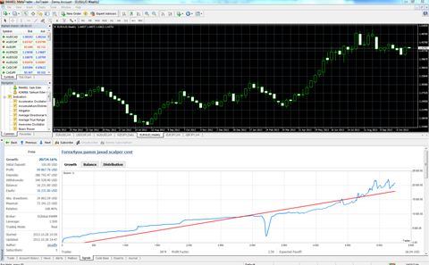
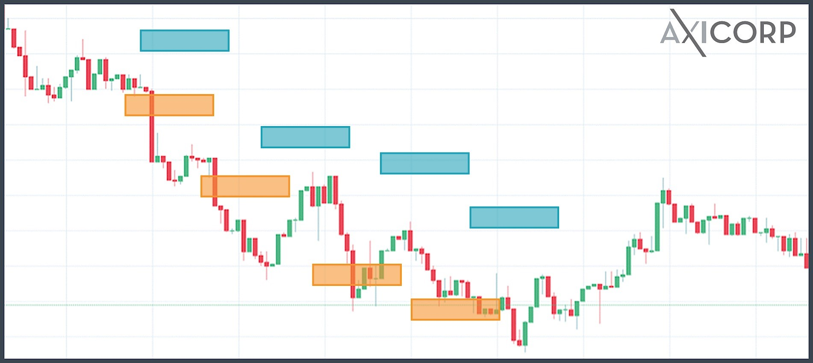
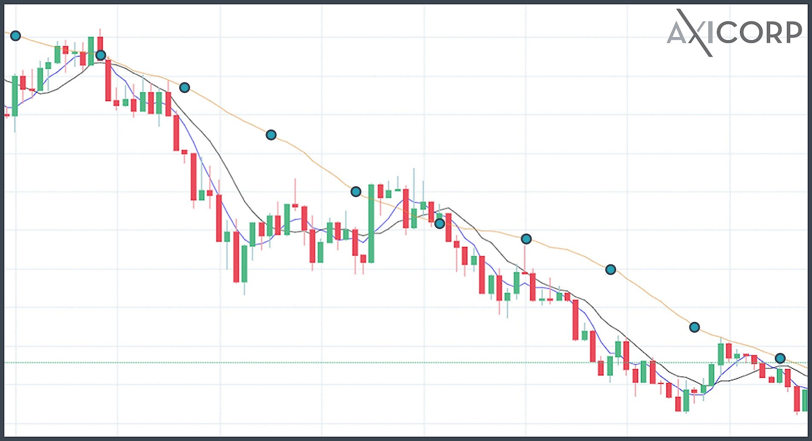
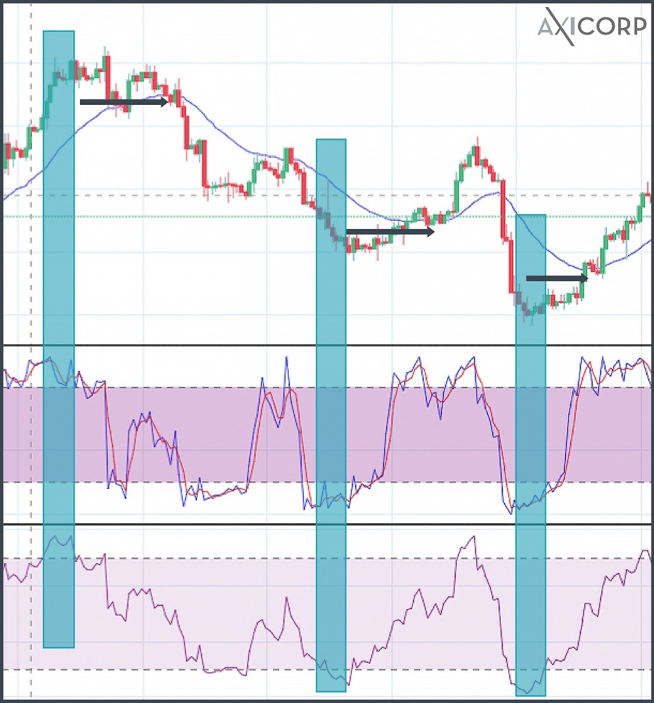

Los brokers de FX dan acceso a los tres mercados principales (Nueva York, Londres y Tokio), donde se operan casi todos los pares de divisas. Por lo tanto, se pueden operar divisas 24 horas del día, en días hábiles.

A menos que se produzca un evento importante como el Brexit, los precios de las divisas se mueven poco a poco. Por esta razón, salvo el yen japonés, las divisas se cotizan con cuatro puntos decimales. En un día normal de mercado de divisas se mueven alrededor de 0,0010 - 0,0030.
Además, dadas las dimensiones del mercado forex, incluso las transacciones muy grandes tienen un impacto mínimo en el precio, con lo que es menos susceptible a manipulaciones por parte de una sola entidad.
Debido a la estabilidad de las divisas, los traders de forex casi siempre utilizan la potencia del apalancamiento. Gracias al apalancamiento, con una cantidad pequeña de capital se pueda operar una suma más grande. Por ejemplo, con un apalancamiento de 1:100 el trader puede utilizar 100 USD de su cuenta para comprar 10.000 USD en euros. Como un euro cambia 0,0001 USD en valor, la posición de trading cambia en 1 USD. Por tanto, un cambio ínfimo en la fluctuación del valor de la divisa puede resultar en una ganancia o pérdida importante para el trader. Además, esto significa que los traders minoristas pueden empezar a operar FX con una suma relativamente pequeña.
Los pares de divisas pueden ser bastante líquidos a causa del volumen que mueve este mercado y del número limitado de pares de divisas que existen. A pesar de ello, la liquidez de los pares de divisas es menor en comparación con las monedas de países emergentes, como la rupia de Sri Lanka. Aun así, los traders de forex minoristas operan casi exclusivamente pares de divisas importantes, con USD o EUR.
En FX, las comisiones salen del spread de compraventa, que discutiremos más adelante. Esto resulta en una comisión variable en lugar de fija.
En cada transacción, el comprador da algo al vendedor y viceversa. En FX, el comprador entrega dinero al vendedor y el vendedor entrega dinero en una divisa diferente al comprador. Así pues, las transacciones de FX se hacen en pares de divisas.
Las divisas se denominan usando el código ISO 4.217. La nomenclatura tiene siempre 3 letras. En la tabla siguiente se muestran las divisas operadas en los mercados FX en 2016 en comparación con su participación de mercado.
- USD 88%
- EUR 31%
- JPY 22%
- GBP 13%
- AUD 7%
- CAD 5%
- CHF 5%
- CNY 4%
- Otras 35%
Dado que las divisas se operan en pares, la participación total de mercado suma el 200%. Debido a la magnitud de la economía estadounidense y al hecho de que la mayor parte de materias primas se operan en USD, hay muchas más transacciones FX en USD que en otras divisas.
La cotización de un par de divisas FX siempre se hace de la manera siguiente:
- USD/CAD 1,30425
La divisa de la izquierda del par, el USD en este ejemplo, es la divisa base. La divisa de la derecha del par es la divisa cotizada. La divisa base se usa para comprar la divisa cotizada. La cifra representa cuánto de la divisa cotizada se gana gastando 1 unidad de la divisa base. En este ejemplo, con 1 dólar estadounidense, podemos comprar 1,3042 dólares canadienses. El cuarto decimal (la cifra 1 de 0,0001, por ej.) es lo que se conoce como "pip". El pip es la unidad operable más pequeña del mercado FX. Por tanto, el quinto punto decimal, el "pipette", solo sirve para dar información. Algunos brokers ni siquiera cotizan el pipette.
La excepción es cuando en un par de divisas aparece el yen japonés. En ese caso, el pip se convierte en el segundo punto decimal, ya que, en comparación, un yen vale mucho menos que otras divisas principales. Por lo tanto, el par USDJPY toma esta forma:
- USD/JPY 111.604
Debido a la naturaleza dual del par de divisas, si un trader de forex quiere comprar la divisa base utilizando la divisa cotizada, lo que hace es vender el par de divisas en lugar de comprarlo. Por ejemplo, podemos comprar 1 dólar de EEUU por 11,60 yen, según el ejemplo anterior.
Aunque casi todos estamos acostumbrados a ver solo un precio de una divisa, siempre puede haber discrepancias entre el precio al que el vendedor está dispuesto a vender y lo que el comprador está dispuesto a pagar.
Vamos a ver este ejemplo:
- GBP/USD 1,3074 precio Ask (compra)
- GBP/USD 1,3070 precio Bid (venta)
Aquí, el precio Ask indica que un comprador está dispuesto a gastar 1 GBP para comprar 1,3074 USD, y el vendedor solo está dispuesto a aceptar 1,3070 a cambio de 1 GBP. El precio Bid suele ser menor que el Ask. La diferencia entre ambos es el spread. El spread, que normalmente es en lo que se basan los brokers para ganar dinero, puede diferir bastante según la empresa que el trader de FX elija para operar.
El mercado forex está formado por traders minoristas (particulares) o institucionales, y no está regulado por una autoridad central como por ejemplo una bolsa . Existen todas clases de traders: desde la persona más modesta hasta empresas de inversión, fondos de cobertura y bancos centrales. Por lo general, los traders minoristas deben usar un bróker que tiene acceso a proveedores de liquidez (grandes instituciones que operan con los brokers). Por lo general, los brokers proporcionan a estos clientes una plataforma online desde la cual ejecutarán sus operaciones. Según la estructura de ejecución de las operaciones, los brokers pueden categorizarse del modo siguiente:
Los creadores de mercado son la contraparte de una operación de un trader minorista. Por tanto, con un creador de mercado es posible ejecutar operaciones muy rápidamente, sin recotizaciones. Aún así, la pérdida del trader se convierte en la ganancia del bróker, y viceversa. Esto puede crear un conflicto de intereses que puede resultar en manipulación de los precios. A pesar de todo, como hay muchos creadores de mercado que compiten, los precios y los spreads de los diferentes brokers tienden a ser similares.
Bancos importantes y otras instituciones usan la red ECN (Red de comunicaciones electrónicas) para proporcionar precios al fondo ECN. El bróker tiene acceso a ese fondo ECN, de manera que puede ofrecer al trader los mejores precios de compra y venta. Esto puede resultar en un spread Bid/Ask muy reducido, a veces casi 0 (en este caso, el precio Ask y el Bid son iguales). Por lo general, los brokers cobran una comisión fija por cada operación, por lo que los traders que operen mucho volumen pueden ahorrar dinero con un bróker ECN.
Además, como los brokers ECN solo son intermediarios entre los proveedores de liquidez y el trader, esta clase de empresa no gana nada cuando sus traders pierden y, por tanto, tienen menos incentivos para manipular el precio. A pesar de todo, en una operación procesada a través de un bróker ECN el precio puede recotizarse (el precio que el trader indicó en la operación puede variar), ya que el volumen proporcionado por la contraparte a un precio específico puede no ser suficiente para llevar a cabo la operación.
Los brokers STP se parecen a los ECN, pues ambos conectan traders con proveedores de liquidez. La principal diferencia estriba en el hecho de que los brokers STP están conectados con los proveedores de liquidez de manera individual. También suelen cobrar por sus servicios a través de un spread Bid/Ask añadido, en lugar de por mediación de una comisión.
Aunque todo lo que acabamos de comentar suele ser bastante exacto, en el mundo real cada bróker puede ofrecer a sus clientes cosas diferentes o planes de comisiones específico. Pero también está el factor confianza, que es muy importante. Por lo tanto, antes de decidirnos por uno u otro, es preciso ser cauteloso e investigar bien.
Las plataformas de trading son el software que los traders utilizan para colocar operaciones. Los diferentes brokers pueden ofrecer sus servicios a través de diferentes plataformas.
MT4
Casi todos los brokers de FX ofrecen MT4, ya que ahora mismo es la plataforma más popular del planeta. Y por esa razón, MT4 es la que tiene más scripts automatizados (los llamados Expert Advisors o Asesores expertos) y sobre la que se ha escrito más información y guías de uso.
Después de seleccionar una plataforma de trading y un bróker, el siguiente paso es aprender a operar. La herramienta más básica para ello es el gráfico de líneas. Este gráfico muestra el precio del par de divisas en relación al tiempo. Aunque es fácil de leer, el gráfico de líneas pierde mucha información relacionada con los movimientos rápidos del mercado, que pueden ser muy importantes para los traders de corto plazo.
La razón principal es que en el gráfico de líneas se conecta los precios de cierre de diversos periodos, con lo que se pierde el movimiento del precio dentro de ese periodo. Por otro lado, los gráficos de velas presentan la mayor parte de los datos importantes de un modo bastante elegante.
Cómo leer un gráfico de velas
Aunque al principio parecen complicados, leer un gráfico de velas es bastante fácil.

Las velas representan cuatro puntos importantes del precio dentro de un periodo temporal particular. Este periodo puede ser un minuto, cinco minutos, 30 minutos, 1 hora, 1 día, 1 semana, 1 mes, etc. Los cuatro puntos principales sobre el precio son los que se muestra en el diagrama. El cuerpo principal de la vela aparece coloreado en verde (o también puede estar vacío) si el precio de cierre es superior al precio de apertura en ese periodo temporal (es decir, si el precio ha incrementado). Si el cuerpo está en rojo o en negro, significa que el precio ha disminuido dentro de ese periodo.
La habilidad para leer gráficos de velas es el primer paso antes de pasar a utilizar diferentes herramientas de análisis para llegar a ser un trader de éxito.
Por lo general, los brokers de forex ofrecen los siguientes tipos de órdenes para asegurar que el trader pueda ejecutar su estrategia sin necesidad de estar monitorizando constantemente el mercado de divisas.
Orden a mercado
Es una orden manual en la que el trader pide al bróker que ejecute una posición de compra o de venta al precio disponible en ese momento en el mercado. Esto se usa cuando un trader quiere entrar una posición tan rápidamente como sea posible.
Orden Limit
Una orden Limit (limitada) es cuando el trader pide al bróker que compre por debajo del precio de mercado o que venda por encima del mismo. Por ejemplo, si ahora mismo el USDCAD está en 1,3012 y el trader cree que el precio subirá a 1,3030 antes de bajar, puede fijar una orden Sell Limit (limitada de venta) en 1,3030. Cuando el precio llegue a 1,3030 o supere este nivel, el bróker venderá la posición automáticamente al siguiente precio disponible.
Orden Stop Loss (stop de pérdidas)
Las órdenes Stop Loss se definen para que la venta solo se ejecute si el precio es igual o está por encima de un precio determinado. Se pueden usar en conjunción con las órdenes Limit para que la venta se ejecute automáticamente pero no por debajo de un precio determinado. En el ejemplo anterior, si el trader también define un Stop Loss en 1,3028, el bróker ejecutará la venta a 1,3030 pero no venderá si el precio cae por debajo de 1,3028. Se puede usar el mismo tipo de orden para comprar, denominándose en este caso "Buy Stop" (stop de compra).
Otros tipos
Hay muchos otros tipos de órdenes en el arsenal de un trader de forex, como Stop Entry (stop de entrada), Trailing Stop (stop dinámico o de seguimiento), Good-Till-Cancelled (válida hasta cancelación), Good-For-The-Day (válida en el día), etc. Son prácticas para que el trader no tenga que monitorizar constantemente los precios de mercado y vale la pena automatizarlas para ejecutar estrategias y limitar posibles pérdidas.
El análisis técnico puede definirse como el uso de una serie de sistemas que buscan patrones en un gráfico y que pueden servir para predecir comportamientos futuros. El análisis técnico parte de la base de que toda la información disponible relacionada con un par de divisas ya se ha valorado. Por lo tanto, la teoría es que si en el pasado se ha formado cierto patrón que se ha ido repitiendo, reconocer dicho patrón puede ayudar a predecir el futuro inmediato.
Ventajas e inconvenientes
La ventaja principal de utilizar el análisis técnico para operar divisas es que el trader no necesita investigar el clima económico ni predecir decisiones políticas futuras. Dado que el mercado FX fluctúa de acuerdo con unos patrones determinados, automatizar una estrategia resulta mucho más fácil. Finalmente, como cada vez hay más traders de FX que empiezan a operar de acuerdo con teorías de análisis técnico, la probabilidad de que todo esto se convierta en una profecía autocumplida es cada vez mayor.
Por otro lado, también hay que decir que si el trader ignora el clima económico y político que influye sobre el mercado de divisas, puede ser muy fácil entrar posiciones perdedoras (largas, sobre todo) incluso cuando hay señales evidentes de problemas.
Herramientas y técnicas
Incluso los traders principiantes pueden empezar a usar estas herramientas sin entender los cálculos técnicos, ya que las plataformas tienen herramientas ya preparadas que pueden insertarse en el gráfico. Vamos a comentar algunas de las herramientas básicas del análisis técnico.
Soporte y resistencia
Uno de los patrones básicos que se observa en los gráficos de precios es que éstos se mueven arriba y abajo, de manera cíclica. Los puntos de giro de estos patrones cíclicos, es decir, cuando el precio cambia de sentido, son los niveles de soporte y resistencia.

Dicho de manera muy sencilla, la línea de soporte es un límite temporal que el precio puede romper para revertir la tendencia general. En el ejemplo anterior, las casillas en azul soportan la tendencia bajista general e impiden que el precio cambie de sentido e inicie una tendencia alcista.
La resistencia es lo contrario del soporte. En el ejemplo aparecen en color naranja. Si la tendencia general es alcista, el soporte de una tendencia bajista serían los valles y la resistencia serían los picos.
Una estrategia de trading muy básica cuando el precio tiende a la baja es comprar la divisa en el nivel de resistencia y venderla en el de soporte. Y al revés: si el precio está en tendencia alcista, comprar en soporte y vender en resistencia. Aunque esto puede funcionar en teoría, en el mundo real es casi imposible predecir de manera exacta la tendencia del precio y los niveles de soporte y resistencia sin utilizar otras herramientas.
Medias móviles
Una de las herramientas básicas es identificar si el precio tiende al alza o a la baja en general es aplicar una media móvil simple. Este indicador toma los últimos X precios de cierre y los promedia para calcular la media móvil de un periodo presente determinado. Cuanto más grandes son esas X, más fuerte es la tendencia que marca la MM.

El diagrama indica la MM de 30 periodos en naranja, la de 10 periodos en negro y la de 5 periodos en azul. Como es evidente, la línea azul sigue las oscilaciones del mercado más de cerca que la línea naranja. Por lo tanto, la línea naranja muestra una línea de tendencia más fuerte. A pesar de ello, como un pico o caída importante puede afectar una MM de manera innecesaria, los traders suelen usar las medias móviles exponenciales (MME) para ponderar movimientos de precios más recientes.
En el ejemplo anterior, la línea azul representa la MME de 30 periodos y la naranja es la MM simple de 30 periodos. La MM exponencial es más sensible a los precios recientes, pero también tiene en cuenta los últimos 30 precios de cierre. Por tanto, es más exacto utilizar líneas de tendencia para estudiar los movimientos de los precios y discernir hacia dónde van.
Osciladores
Asumiendo que el trader ha identificado la tendencia general, ¿cómo puede estar seguro de que no va a cambiar de dirección cuando vaya a entrar una operación? Aquí es donde entran en juego los osciladores.
Algunos de los osciladores más habituales son los estocásticos y el RSI, el índice de fuerza relativa. Sin entrar en detalles técnicos sobre su funcionamiento, vamos a ver cómo se interpretan las señales.
En el software de gráficos de mercado, el oscilador estocástico y el RSI se parecen mucho.

Aquí, el gráfico de abajo es el RSI y el que hay después es el oscilador estocástico. La línea azul en el gráfico de velas es la MME de 30 periodos. El factor más importante que hay que identificar aquí es que ambos osciladores salen de las zonas más oscuras antes de que se produzca el giro de la tendencia. Por lo tanto, si el trader se fija en la ruptura de los osciladores, puede confiar en que la tendencia está a punto de cambiar de dirección.
Otras herramientas y notas
Hay muchas otras herramientas, como los retrocesos de Fibonacci, las bandas de Bollinger y el MACD, que pueden señalar posibles tendencias futuras y niveles de soporte y resistencia. Lo más importante es darse cuenta de que ninguna de estas herramientas puede predecir el mercado FX con una exactitud del 100%. A pesar de ello, el trader puede mejorar sus posibilidades si añade estas herramientas a su arsenal. Si es usted principiante y tantas opciones le parecen abrumadoras, empiece con lo más básico y familiarícese con los parámetros de las herramientas que hemos comentado anteriormente. Si utilizamos la configuración predeterminada de estas herramientas (ya que casi todos los traders utilizarán los mismos parámetros), el mercado puede comportarse de un modo "autorrealizado".
Análisis fundamental
El análisis fundamental es cuando el trader de FX tiene en cuenta razones económicas o políticas para decidir hacia dónde va a fluctuar el precio. La idea principal detrás de este tipo de análisis es que si se espera que la economía subyacente de la divisa funcione mejor en comparación con otros países, el precio de dicha divisa subirá (o al revés).
Ventajas e inconvenientes
La principal ventaja del análisis fundamental es que las previsiones de las fluctuaciones del precio se basan en valores del mundo real. Por lo tanto, identificar suficientes factores de impacto puede predecir de manera precisa las tendencias futuras del precio. Aún así, especialmente en el corto plazo, un factor que puede mover los precios de mercado es el comportamiento de los traders, que puede parecer aleatorio.
Herramientas y técnicas
A diferencia del análisis técnico, el fundamental tiene menos que ver con los gráficos y mucho más con investigar factores externos y estar al tanto de los indicadores económicos. A continuación comentaremos algunos de los indicadores económicos y qué impacto tienen en las divisas relacionadas con cada uno.
PIB y ventas minoristas
El PIB, el producto interior (o interno) bruto, puede describirse como el desempeño económico de un país. El factor más importante que tienen en cuenta los traders es la tasa del PIB anualizada. A medida que se acerca la publicación del PIB de un país, los traders comentarán sobre si el dato será mejor o peor, llegarán a un consenso y valorarán esa conclusión en el precio de la divisa. Tan pronto como se publica el informe, si éste indica que la tasa de crecimiento es mejor de lo esperado, la divisa se apreciará o viceversa.
El informe de ventas al por menor, o ventas minoristas, mide el gasto de los consumidores. Si el gasto de los consumidores está bajando se podría pensar que se acerca un ciclo de recesión, ya que las ventas minoristas tienen un gran impacto sobre el PIB. Cuando operamos con pares de divisas con USD, el informe de ventas minoristas de EEUU (mensual), puede usarse como indicador a corto plazo, en comparación con el informe del PIB, que se publica una vez por trimestre.
IPC y tipos de interés
El índice de precios al consumo o IPC mide la inflación de una economía, es decir, cómo de rápido sube el precio de los bienes. Si la tasa de inflación es elevada, las autoridades monetarias podrían subir los tipos de interés para rebajar el gasto de los consumidores. Esto significa que habrá más inversores dispuestos a comprar bonos soberanos de esa divisa, incrementando así la demanda. Por tanto, el precio de la divisa subirá. Si la inflación se sitúa por debajo de las previsiones, el precio de la divisa podría bajar. Por otro lado, si los traders notan inflación galopante (como en el caso de Venezuela), la demanda de esa divisa puede caer rápidamente.
Informes de empleo
Los informes de empleo incluyen datos sobre salarios y la tasa de paro. Si el paro es bajo y los salarios suben, la gente gastará más y el PIB del país subirá, y viceversa. Por lo tanto, un informe de empleo positivo reforzará la divisa de esa economía subyacente.
Acontecimientos geopolíticos
Los indicadores que acabamos de comentar son datos que las agencias gubernamentales publican de manera periódica. Pero hay factores, en forma de acontecimientos geopolíticos, que podrían impactar de manera más fuerte sobre los mercados de divisas. El Brexit, las elecciones presidenciales de EEUU, el tratado de libre comercio de América del Norte o las guerras comerciales, todo puede influir sobre el mercado forex. Lo más importante es llegar a entender cómo afectará un acontecimiento a la economía subyacente y, en consecuencia, a los mercados financieros. Incluso si los otros traders no comparten su misma opinión, si su predicción es correcta los mercados se moverán a su favor a largo plazo.
Tipos de traders
Hay varios estilos de trading de forex que los traders pueden seguir. En general, pueden categorizarse por el tiempo en que mantienen las posiciones.
Trading especulativo
El trading especulativo (scalping o scalp trading) es la forma más activa de trading, ya que las posiciones se mantienen, literalmente, segundos o minutos. Es una estrategia enteramente diseñada sobre la base del análisis técnico, ya que los fundamentales no afectan a estos periodos tan breves. También es importante seleccionar un bróker de forex adecuado, con comisiones bajas y ejecución rápida, ya que se necesitan varios cientos de pequeñas operaciones para ganar un cierto dinero.
Trading de día o intradía
Como sucede con el trading especulativo, los traders intradía también utilizan el análisis técnico, a menos que surja un acontecimiento geopolítico súbito. Los traders intradía operan posiciones durante la jornada de mercado, y no suelen dejarlas de un día para otro. Por lo general también necesitan ejecución rápida y comisiones bajas para tener beneficios.
Swing trading
El siguiente paso natural es el swing trading o trading de giros. Aquí, las posiciones se mantienen entre varios días a semanas. El análisis puede ser una mezcla de técnico y fundamental, ya que ambos pueden impactar sobre el precio en ese marco temporal. Como en este estilo solo se entra y se sale de una posición de vez en cuando, puede ser práctico para los traders que quieran entrar en el mercado de divisas a tiempo parcial.
Trading de posiciones
Es el estilo de trading con los marcos temporales más largos. Por lo general, las posiciones se mantienen meses o incluso años. El trading de posiciones FX se mueve sobre todo por análisis fundamental. En este caso, lo más importante a la hora elegir un bróker es que sea de fiar y que no haya peligro de que pueda cerrar en años venideros.
Siguientes pasos
En cuanto hayamos aprendido los fundamentos del trading de FX leyendo artículos y libros, el siguiente paso para seguir aprendiendo es practicar. Aún así, no hace falta que los principiantes arriesguen dinero real, ya que pueden desarrollar una estrategia en los mercados desde una cuenta demo. El mejor modo de utilizar una cuenta demo es tratarla como si su dinero estuviera realmente el juego. También pueden ayudar al aspirante a trader de forex a valorar el bróker, el servicio al cliente, la plataforma y las herramientas que le proporcionan.
Mientras se practica, y también cuando se pasa a trading real, viene muy bien mantener un diario de operaciones. Esto podrá ayudarle a seguir las estrategias de trading y las herramientas que utilice. De esta manera, cada vez es más fácil perfeccionar la estrategia para mejorar el resultado.
Cuando operar forex desde una cuenta demo ya es una experiencia fácil y tranquila, el trader puede empezar poco a poco a utilizar dinero real. Pero no hay que olvidar que hay siempre hay que seguir estudiando, familiarizarnos con nuevas herramientas y profundizar en todo lo que ya sabemos. A veces puede ser difícil impedir que las emociones nos influyan cuando operamos forex. En esos casos es fundamental utilizar estrategias de entrada y salida automatizadas, como órdenes Stop y Limit, para asegurar que la estrategia se sigue al pie de la letra.